외부 상·하단 구조물과 Y·θ의 상관관계·민감도
θ 증가 시 상단 영상 각도는 감소, 하단 영상 각도는 증가합니다.
Y 변화의 반응은 선택한 이동 단위 기준으로 더 작지만, 특히 2차 일부 조건에서 방향성 있는 변화가 관측됐습니다.
575장(1차 281장·2차 60장·3차 234장), 상·하단 1,150개 직선. 모든 직선이 최대 50회·종료값 10⁻⁸ 조건을 충족했고 비유한 결과나 예외는 없었습니다. 원본 해시를 모두 확인했으며 기준 이미지 4장의 8개 경계점 집합과 직선 결과를 이전 결과와 대조했습니다.
1. 이번에 수행한 계산
기존 탐색 영역·중앙 가림 마스크 → 가로 1px마다 부호 있는 세로 Sobel 최댓값 → 일반 Huber 세로 잔차 피팅. Gaussian, 추가 점 제거, 최소 점 개수 제한, 이미지 정합·회전 보정·탐색 영역 추적을 추가하지 않았습니다.
Huber: t=1.345, MAD(center=0) 척도 갱신, OLS 시작값, maxiter=50, tol=10⁻⁸, conv=dev. 현재 OpenCV 5.0.0, statsmodels 0.15.0. 상단·하단 각도는 φ=atan(m)×180/π, 영상 좌표는 +y가 아래입니다. 영상 각도 φ와 장비 θ는 서로 다른 양입니다.
Y 조건별 관계: φ = aY·Y + c
θ 조건별 관계: φ = aθ·θ + c
단위 이동 반응: aY×0.05mm 또는 aθ×0.01°
Huber는 영상의 직선 추정에 사용했습니다. 그 결과와 이동 라벨의 관계에는 앞서 합의한 Pearson r·절편 포함 단순선형회귀(OLS)·잔차 RMS를 계산했습니다. 각 사진이 관측값 한 개이며, 수천 개 경계점을 독립 사진처럼 세지 않았습니다. 반복 사진은 평균내지 않고 모두 표시했습니다. 같은 조건의 반복 사진을 독립 이동 실험으로 가정하는 p값·신뢰구간·동등성 판정은 산출하지 않았습니다.
2. 데이터 구분
- 1차: 기존 파일 수정시각 기반 2·3·6·7번 Y 구간과 4·5번 θ 구간을 각각 분석했습니다. 4번도 포함했습니다. 단일 축 촬영에서 다른 축이 구간 내 고정됐다는 전제를 사용했으며, 확인되지 않은 다른 축 절대좌표를 0으로 채우지 않았습니다.
- 2차: θ가 같은 사진으로 Y 관계를, Y가 같은 사진으로 θ 관계를 구했습니다. 같은 라벨 사진 3장 모두 사용했습니다.
- 3차: Y=0.05mm 고정, θ=0.04~0.82° 중 제공된 78조건×3장. 0.10°가 빠진 목록은 그대로 사용했습니다. 확인된 0.32° 파일명 및 0.57° TXT(T_Actual=-1.100) 정정을 반영했으며 원본 파일은 수정하지 않았습니다.
- 차수·촬영 구간을 합친 하나의 회귀식은 만들지 않았습니다. 구간별 절편도 각각 추정했습니다.
3. θ 변화와 영상 각도의 관계
| 구간 | 구조물 | 사진 수 | 이동값 수 | 라벨 범위 | Pearson r | 변화율 (영상 °/장비 °) | θ 0.01°당 영상 변화 (°) | RMS (영상 °) | 최대 절대 잔차 (영상 °) |
|---|---|---|---|---|---|---|---|---|---|
| 1차 4번 촬영구간 | 상단 | 100 | 100 | 0.01 ~ 1 | -0.999454 | -0.08759520 | -0.00087595 | 0.000836 | 0.002281 |
| 1차 4번 촬영구간 | 하단 | 100 | 100 | 0.01 ~ 1 | 0.998943 | 0.19787425 | 0.00197874 | 0.002628 | 0.006164 |
| 1차 5번 촬영구간 | 상단 | 100 | 100 | -1 ~ -0.01 | -0.999517 | -0.08774114 | -0.00087741 | 0.000787 | 0.001870 |
| 1차 5번 촬영구간 | 하단 | 100 | 100 | -1 ~ -0.01 | 0.998616 | 0.19930866 | 0.00199309 | 0.003030 | 0.007920 |
| 2차 Y=0.05 고정 | 상단 | 18 | 6 | 0.01 ~ 2 | -0.999986 | -0.08786648 | -0.00087866 | 0.000351 | 0.000859 |
| 2차 Y=0.05 고정 | 하단 | 18 | 6 | 0.01 ~ 2 | 0.999836 | 0.19904062 | 0.00199041 | 0.002690 | 0.006595 |
| 2차 Y=0.1 고정 | 상단 | 15 | 5 | 0.01 ~ 2 | -0.999905 | -0.08824856 | -0.00088249 | 0.000918 | 0.001865 |
| 2차 Y=0.1 고정 | 하단 | 15 | 5 | 0.01 ~ 2 | 0.999677 | 0.20001244 | 0.00200012 | 0.003842 | 0.010922 |
| 2차 Y=0.5 고정 | 상단 | 12 | 4 | 0.01 ~ 2 | -0.999917 | -0.08810352 | -0.00088104 | 0.000913 | 0.001733 |
| 2차 Y=0.5 고정 | 하단 | 12 | 4 | 0.01 ~ 2 | 0.999731 | 0.19905919 | 0.00199059 | 0.003720 | 0.006292 |
| 2차 Y=1 고정 | 상단 | 12 | 4 | 0.01 ~ 2 | -0.999894 | -0.08787100 | -0.00087871 | 0.001031 | 0.002579 |
| 2차 Y=1 고정 | 하단 | 12 | 4 | 0.01 ~ 2 | 0.999849 | 0.19639647 | 0.00196396 | 0.002744 | 0.005159 |
| 3차 Y=0.05mm 고정 | 상단 | 234 | 78 | 0.04 ~ 0.82 | -0.999730 | -0.08865655 | -0.00088657 | 0.000467 | 0.001260 |
| 3차 Y=0.05mm 고정 | 하단 | 234 | 78 | 0.04 ~ 0.82 | 0.998466 | 0.19671398 | 0.00196714 | 0.002470 | 0.007315 |
상단은 모든 구간에서 음의 변화율, 하단은 모든 구간에서 양의 변화율입니다. 전 범위 상관계수가 높다는 사실만으로 한 틱 판별 또는 ±0.005° 보정 정확도가 검증되는 것은 아닙니다. 회귀 잔차도 함께 표시했습니다.
4. Y 변화와 영상 각도의 관계
| 구간 | 구조물 | 사진 수 | 이동값 수 | 라벨 범위 | Pearson r | 변화율 (영상 °/mm) | Y 0.05mm당 영상 변화 (°) | RMS (영상 °) | 최대 절대 잔차 (영상 °) |
|---|---|---|---|---|---|---|---|---|---|
| 1차 2번 촬영구간 | 상단 | 20 | 20 | 0.1 ~ 2 | 0.013364 | 0.00000942 | 0.00000047 | 0.000406 | 0.001000 |
| 1차 2번 촬영구간 | 하단 | 20 | 20 | 0.1 ~ 2 | 0.038108 | 0.00012790 | 0.00000639 | 0.001934 | 0.004861 |
| 1차 3번 촬영구간 | 상단 | 20 | 20 | -2 ~ -0.1 | -0.222841 | -0.00013804 | -0.00000690 | 0.000348 | 0.000793 |
| 1차 3번 촬영구간 | 하단 | 20 | 20 | -2 ~ -0.1 | 0.070079 | 0.00023357 | 0.00001168 | 0.001917 | 0.003958 |
| 1차 6번 촬영구간 | 상단 | 20 | 20 | 0.05 ~ 1.95 | 0.019682 | 0.00001756 | 0.00000088 | 0.000514 | 0.001075 |
| 1차 6번 촬영구간 | 하단 | 20 | 20 | 0.05 ~ 1.95 | -0.134838 | -0.00053244 | -0.00002662 | 0.002256 | 0.004417 |
| 1차 7번 촬영구간 | 상단 | 20 | 20 | -1.95 ~ -0.05 | -0.149004 | -0.00010555 | -0.00000528 | 0.000404 | 0.001069 |
| 1차 7번 촬영구간 | 하단 | 20 | 20 | -1.95 ~ -0.05 | 0.201770 | 0.00101012 | 0.00005051 | 0.002827 | 0.005759 |
| 2차 theta=0.01 고정 | 상단 | 12 | 4 | 0.05 ~ 1 | -0.517624 | -0.00077061 | -0.00003853 | 0.000486 | 0.001153 |
| 2차 theta=0.01 고정 | 하단 | 12 | 4 | 0.05 ~ 1 | 0.133508 | 0.00131238 | 0.00006562 | 0.003716 | 0.007596 |
| 2차 theta=0.1 고정 | 상단 | 12 | 4 | 0.05 ~ 1 | -0.479205 | -0.00080965 | -0.00004048 | 0.000566 | 0.001283 |
| 2차 theta=0.1 고정 | 하단 | 12 | 4 | 0.05 ~ 1 | 0.469451 | 0.00239970 | 0.00011999 | 0.001721 | 0.004071 |
| 2차 theta=1 고정 | 상단 | 12 | 4 | 0.05 ~ 1 | -0.603940 | -0.00173702 | -0.00008685 | 0.000874 | 0.001772 |
| 2차 theta=1 고정 | 하단 | 12 | 4 | 0.05 ~ 1 | -0.070086 | -0.00078392 | -0.00003920 | 0.004256 | 0.010216 |
| 2차 theta=2 고정 | 상단 | 12 | 4 | 0.05 ~ 1 | -0.118791 | -0.00024707 | -0.00001235 | 0.000788 | 0.001694 |
| 2차 theta=2 고정 | 하단 | 12 | 4 | 0.05 ~ 1 | -0.456420 | -0.00453638 | -0.00022682 | 0.003373 | 0.006311 |
1차 네 Y 구간의 상관계수는 상단 약 −0.223~+0.020, 하단 약 −0.135~+0.202입니다. 2차 상단에서는 θ=0.01·0.1·1° 조건에 음의 상관이 관측됩니다. 변화량 자체는 표의 aY와 0.05mm당 반응을 함께 읽어야 합니다. 이 결과만으로 Y 영향이 정확히 0이라고 하거나 특정 기계적 원인을 지목하지 않았습니다.
5. Y 고정값에 따른 θ 민감도 비교
Y=0.05·0.1·0.5·1mm 모두에 있는 공통 θ=0.01·0.1·1·2°에서만 비교했습니다(각 Y당 12장). 촬영된 θ 범위가 서로 달라 생기는 비교 차이를 줄이기 위한 조건 일치이며, 나머지 사진도 위의 전체 그룹 분석에 포함됐습니다.
| 구간 | 구조물 | 사진 수 | 이동값 수 | 라벨 범위 | Pearson r | 변화율 (영상 °/장비 °) | θ 0.01°당 영상 변화 (°) | RMS (영상 °) | 최대 절대 잔차 (영상 °) |
|---|---|---|---|---|---|---|---|---|---|
| 2차 공통 θ 조건 / Y=0.05mm | 상단 | 12 | 4 | 0.01 ~ 2 | -0.999994 | -0.08793629 | -0.00087936 | 0.000244 | 0.000520 |
| 2차 공통 θ 조건 / Y=0.05mm | 하단 | 12 | 4 | 0.01 ~ 2 | 0.999803 | 0.19881762 | 0.00198818 | 0.003175 | 0.006364 |
| 2차 공통 θ 조건 / Y=0.1mm | 상단 | 12 | 4 | 0.01 ~ 2 | -0.999952 | -0.08818468 | -0.00088185 | 0.000698 | 0.001800 |
| 2차 공통 θ 조건 / Y=0.1mm | 하단 | 12 | 4 | 0.01 ~ 2 | 0.999714 | 0.20033396 | 0.00200334 | 0.003856 | 0.010633 |
| 2차 공통 θ 조건 / Y=0.5mm | 상단 | 12 | 4 | 0.01 ~ 2 | -0.999917 | -0.08810352 | -0.00088104 | 0.000913 | 0.001733 |
| 2차 공통 θ 조건 / Y=0.5mm | 하단 | 12 | 4 | 0.01 ~ 2 | 0.999731 | 0.19905919 | 0.00199059 | 0.003720 | 0.006292 |
| 2차 공통 θ 조건 / Y=1mm | 상단 | 12 | 4 | 0.01 ~ 2 | -0.999894 | -0.08787100 | -0.00087871 | 0.001031 | 0.002579 |
| 2차 공통 θ 조건 / Y=1mm | 하단 | 12 | 4 | 0.01 ~ 2 | 0.999849 | 0.19639647 | 0.00196396 | 0.002744 | 0.005159 |
공통 조건에서 변화율의 최댓값−최솟값은 상단 0.000313673, 하단 0.003937491 영상 °/장비 °입니다. 이는 관측된 차이이며 Y와 θ의 상호작용 유무에 대한 유의성 검정 결과는 아닙니다.
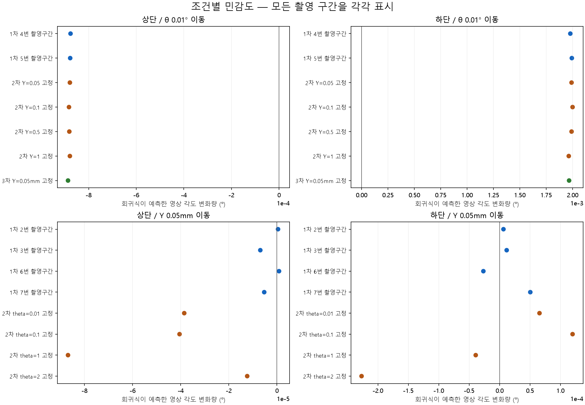
6. 구간별 산점도와 잔차
위쪽: 개별 사진의 영상 각도와 해당 그룹의 회귀선. 아래쪽: 각 사진이 회귀선에서 벗어난 정도. 사진 번호는 파일의 (1)·(2)·(3) 표기이며 서로 독립적인 촬영 세션을 뜻한다고 가정하지 않았습니다.
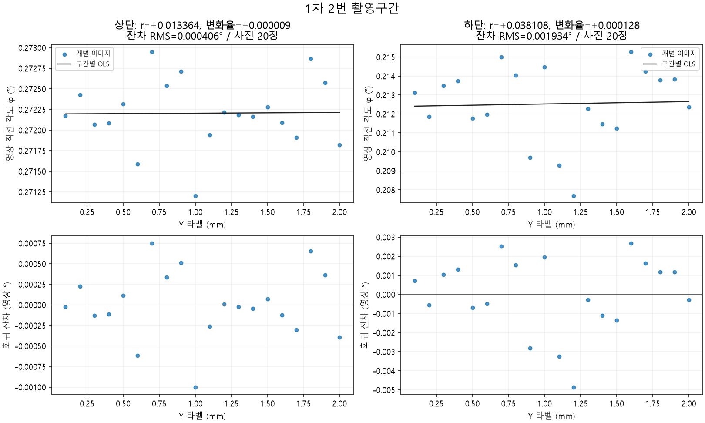
7. 원본 위 경계점·직선 확인
각 차수의 이동 범위 끝 조건과 탐색 띠 끝점이 가장 많은 이미지를 표시했습니다. 통계에는 전체 사진이 사용됐습니다. 주황은 입력점 전체, 하늘색은 구조물당 단일 직선입니다. 중앙 가림 구간을 잇는 선은 추정 직선의 연장입니다. 보기 쉽게 세로를 확대했으므로 화면 기울기를 실제 각도로 읽으면 안 됩니다.
총 3,314,300개 점 중 기존 탐색 띠의 끝 행이 선택된 점은 352개, 해당 직선은 117개입니다. 이 점들도 제거하지 않았습니다.
원본 확인에서 D2_058(Y=1mm·θ=2°) 등 일부 끝 조건은 중앙 장착부가 기존 가림 마스크 밖으로 이동해 그 주변의 점도 입력에 포함된 것을 확인했습니다. 영상 가장자리에서도 주 경계에서 벗어난 점이 보입니다. 설정한 마스크나 점 선택을 바꾸지 않고 Huber 가중만 적용한 결과이며, 이 점들의 영향만 따로 분리하는 실험은 하지 않았습니다.
1차 Y-2.00.bmp (D1_041)
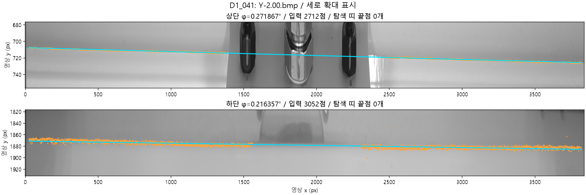
1차 Y+2.00.bmp (D1_021)
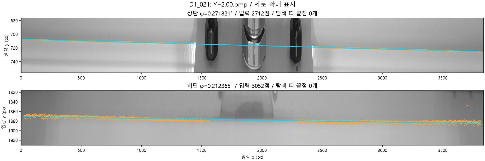
1차 T-1.00.bmp (D1_241)
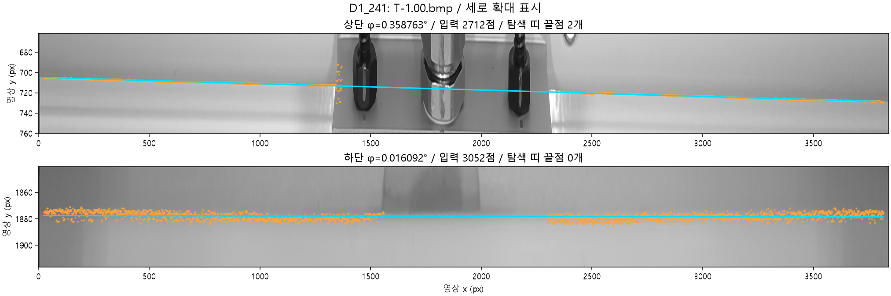
1차 T+1.00.bmp (D1_141)
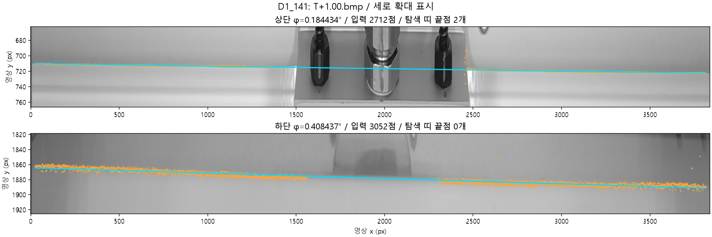
2차 Y+0.05 T+0.01 (1).bmp (D2_003)
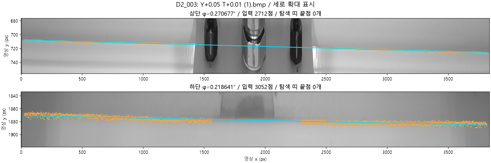
2차 Y+0.05 T+2.00 (1).bmp (D2_018)
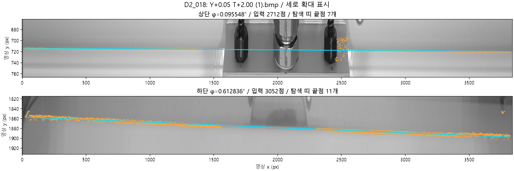
2차 Y+1.00 T+0.01 (1).bmp (D2_049)
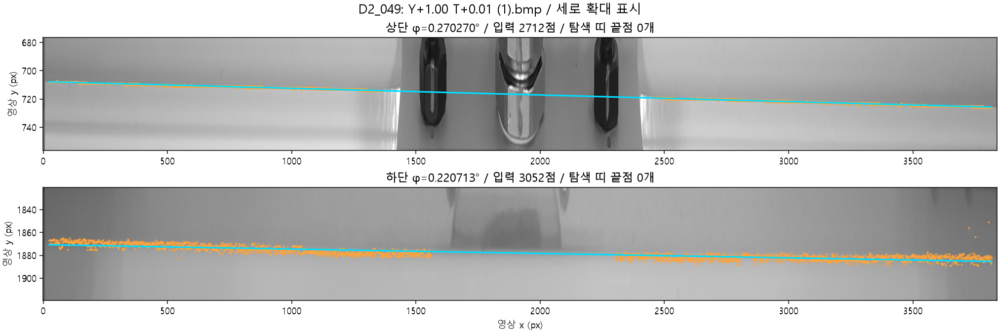
2차 Y+1.00 T+2.00 (1).bmp (D2_058)
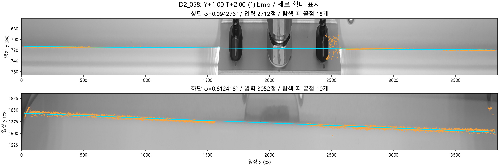
3차 Y+0.05 T+0.04 (1).bmp (D3_001)
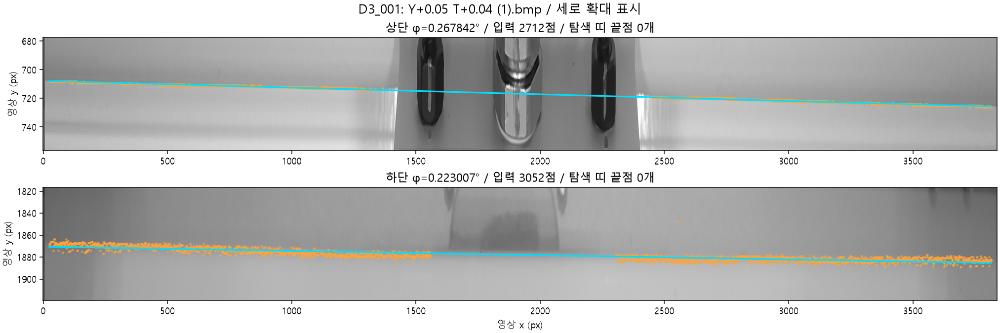
3차 Y+0.05 T+0.82 (1).bmp (D3_232)
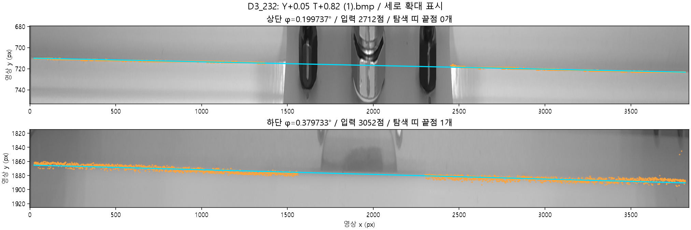
8. 이동값이 하나뿐인 조건
아래 조건은 사진을 측정했지만 해당 축 값이 변하지 않아 상관계수·변화율을 계산할 수 없습니다. 2차 기준 3장은 Y=0·θ=0뿐이므로 Y=0.05 고정 그룹 등에 임의로 넣지 않았습니다. 1차 center는 각 이동 구간에 중복 삽입하지 않고 기준 재현 확인에 사용했습니다.
| 조건 | 확인하려던 축 | 사진 수 | 존재하는 이동값 |
|---|---|---|---|
| 2차 theta=0 고정 | Y | 3 | [0.0] |
| 2차 theta=0.02 고정 | Y | 3 | [0.05] |
| 2차 theta=0.03 고정 | Y | 3 | [0.05] |
| 2차 theta=0.2 고정 | Y | 3 | [0.1] |
| 2차 Y=0 고정 | theta | 3 | [0.0] |
9. 근거·결과 파일
- NIST Pearson 상관계수 · NIST 선형 최소제곱 회귀 · statsmodels RLM.fit
- 전체 설정과 고정 탐색 영역 · 575장 경로·라벨·정정 내역 · 원본 해시·재현 근거
- 1,150개 직선 측정값 · 그룹별 모든 관측값·기울기 m 및 각도 φ 회귀·잔차 · 요약
- Huber 종료 상태·기준값 재현 · 수치 교차 확인
- 재현 순서: extract.py → fit.py → analyze.py → make_report.py. fit.py는 기존 huber_convergence_20261101/.venv의 Python, 나머지는 기존 기본 Python을 사용합니다.
새 임의 합격선, 데이터 증강, Gaussian, 이상점 제거, 기계적 오차 추정, θ 보정 알고리즘 변경은 수행하지 않았습니다.